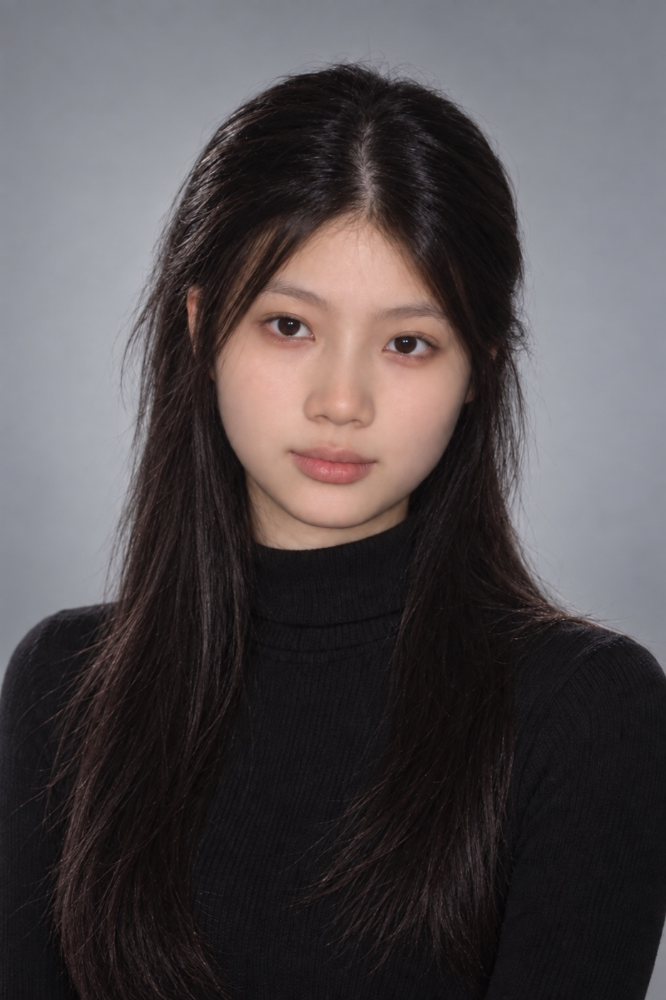

2026.05 — 2026.08腾讯
AI 产品经理实习
AI 产品经理实习
视频生成模型评测、选型与质量优化
围绕设计、营销和内容创作场景组织测试集与评测任务，横向比较主流视频模型的生成质量、效率、成本和适用场景，并建立从问题采集、人工标注到归因分析与回归验证的 Bad Case 流程。
评测体系
制定指标、评分口径与模型准入标准。
产品策略
将结论用于调用方案、重试机制与验收标准。
体验优化
协同算法与研发调整 Prompt、配置与流程。
产品设计背景让我关注人的行为与体验，AI 产品实践则让我学会面对模型的不确定性，用评测、规则和工作流把体验做实。

我独立推进 NIVI AI 主播陪练等 AI 产品从需求调研、MVP 设计、技术评估到上线验证，也在腾讯实习中参与视频生成模型评测、竞品研究与生成质量优化。面对模型能力边界，我会通过流程拆分、规则约束、Human in the Loop、异常兜底和评测集持续提升产品稳定性。
在真实业务场景里验证模型、识别失败模式，并把评测结论转化为模型接入和产品体验决策。
围绕设计、营销和内容创作场景组织测试集与评测任务，横向比较主流视频模型的生成质量、效率、成本和适用场景，并建立从问题采集、人工标注到归因分析与回归验证的 Bad Case 流程。
制定指标、评分口径与模型准入标准。
将结论用于调用方案、重试机制与验收标准。
协同算法与研发调整 Prompt、配置与流程。
从模型评测平台到实时 AI 陪练、生成式游戏平台和黑客松学习产品，每个项目都保留明确的问题、方法与验证证据。
建立统一的场景化评测标准，比较生成质量、耗时、成本与适用场景，并用 Bad Case 归因推动提示词、参考图约束、默认参数和重试提示优化。
通过实时语音转写、动态弹幕、带证据反馈和针对性重练，帮助新人主播在正式开播前发现表达与互动问题。
查看 GitHub 项目面向非技术创作者，设计自然语言生成轻量 2D 模拟器的平台，串联需求澄清、GameSpec、规则校验、自动试玩与发布流程。
查看 GitHub 项目持续体验模型与 AI 产品，从用户决策、产品流程、商业变化和模型能力边界中提炼判断。
产品设计训练提供对用户与表达的敏感度，AI 项目实践形成从问题、方案到验证的工作方式。
产品设计 · 本科2023.09 — 2027.06
从用户场景和业务目标定义问题，根据模型能力与成本约束设计人机协作流程，再用评测集、Bad Case 和真实反馈完成验证与迭代。
如果你正在寻找 AI 产品经理，或希望交流模型评测、Agent 工作流与 AI 产品实践，欢迎联系我。